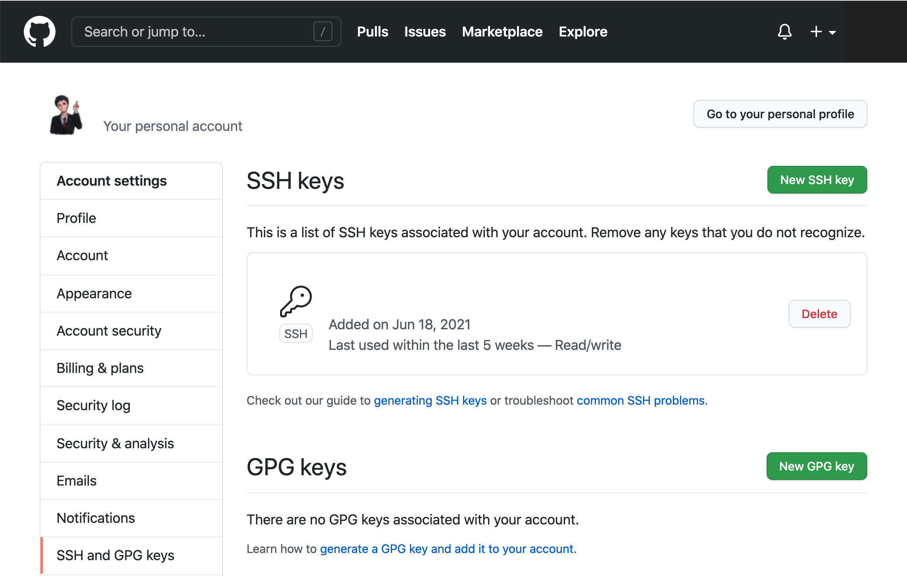

Git SSH Set Up Guide¶
This is a tutorial for setting up SSH keys with GitHub.
SSH Key Generation¶
First check for existing keys:
$ lc -al ~/.ssh
Use ssh-keygen to generate new the SSH key with the email registering GitHub:
$ ssh-keygen -t ed25519 -C "<xxx>@gmail.com"
Generating public/private ed25519 key pair.
Enter file in which to save the key:
...
Enter passphrase (empty for no passphrase):
...
Important
Your passphrase should be complicated, and you must store it safely.
Note
A passphrase is a memorized secret consisting of a sequence of words or other text that a claimant uses to authenticate their identity. Here, it refers to a secret used to protect an encryption key. Commonly, an actual encryption key is derived from the passphrase and used to encrypt the protected resource.
Fire up the SSH agent and add the SSH key to ~/.ssh on your local machine:
$ eval `ssh-agent -s`
$ ssh-add ~/.ssh/id_ed25519
Enter passphrase for /Users/<user>/.ssh/id_ed25519:
...
Identity added: /Users/<user>/.ssh/id_ed25519
SSH Key Link¶
Pull up the key:
$ cat ~/.ssh/id_ed25519.pub
now copy the output, navigate to Github settings, and add the SSH key
Login Escape¶
If it is asking you for a username and password when manipulating with GitHub, your origin remote is pointing at the HTTPS url rather than the SSH url. You need to change it to SSH url:
$ git remote set-url origin git@github.com:<username>/<repo>.git